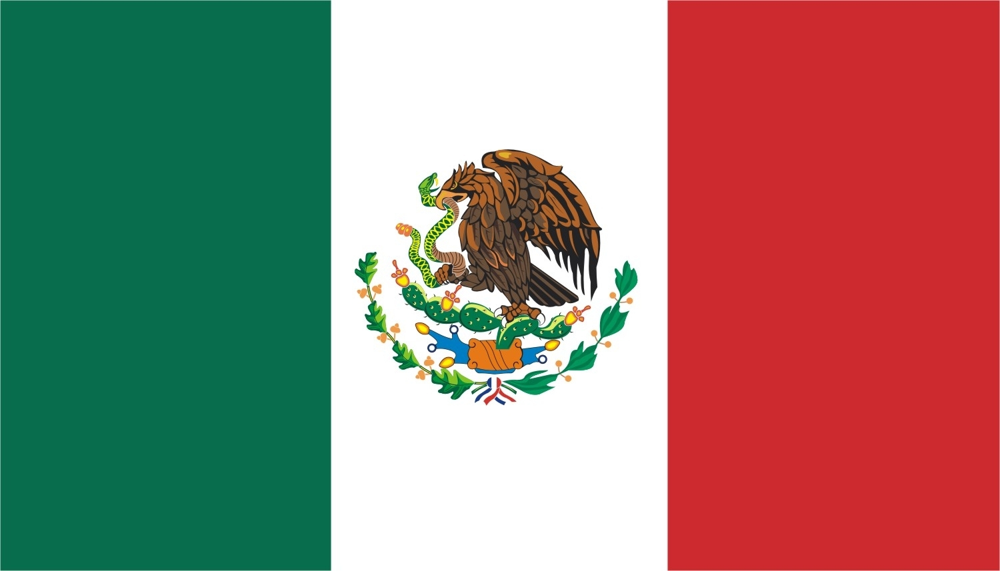

Mexico
Squad
| Number |
Name |
Club |
Birthdate |
| Goalkeeper |
| 1 |
José Corona |
Cruz Azul |
26.01.1981 |
| 13 |
Guillermo Ochoa |
Standard Liège |
14.07.1985 |
| 12 |
Alfredo Talavera |
Deportivo Toluca |
18.09.1982 |
| Defender |
| 12 |
Edson Álvarez |
CF América |
24.10.1997 |
| 2 |
Hugo Ayala |
UANL Tigres |
31.03.1987 |
| 23 |
Jesús Gallardo |
CF Monterrey |
15.08.1994 |
| 7 |
Miguel Layún |
Villarreal CF |
25.06.1988 |
| 15 |
Héctor Moreno |
Real Sociedad |
17.01.1988 |
| 3 |
Carlos Salcedo |
Eintracht Frankfurt |
29.09.1993 |
| Midfielder |
| 6 |
Jonathan dos Santos |
Los Angeles Galaxy |
26.04.1990 |
| 8 |
Marco Fabián |
Eintracht Frankfurt |
21.07.1989 |
| 18 |
Andrés Guardado |
Real Betis |
28.09.1986 |
| 5 |
Erick Gutiérrez |
CF Pachuca |
15.06.1995 |
| 16 |
Héctor Herrera |
FC Porto |
19.04.1990 |
| Forward |
| 20 |
Javier Aquino |
UANL Tigres |
11.02.1990 |
| 17 |
Jesús Corona |
FC Porto |
06.01.1993 |
| 10 |
Giovani dos Santos |
Los Angeles Galaxy |
11.05.1989 |
| 14 |
Javier Hernández |
West Ham United |
01.06.1988 |
| 9 |
Raúl Jiménez |
Wolverhampton Wanderers |
05.05.1991 |
| 19 |
Oribe Peralta |
CF América |
12.01.1984 |
| 11 |
Carlos Vela |
Los Angeles FC |
01.03.1989 |
| 22 |
Hirving Lozano |
PSV Eindhoven |
30.07.1995 |
| Manager |
|
Juan Carlos Osorio |
|
08.06.1961 |
| Games |
| Date |
Time |
Home |
Away |
| 17.06.18 |
17:00 |
Germany |
Mexico |
| 23.06.18 |
17:00 |
South Korea |
Mexico |
| 27.06.18 |
16:00 |
Mexico |
Sweden |